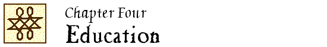

John Locke Chronology |
John Locke Manuscripts |
John Locke Resources |
John Locke Bibliography | ||

|
1653-1700 1701-1750 1751-1800 1801-1850 1851-1900 |
1901-1910 1911-1920 1921-1930 1931-1940 1941-1950 |
1951-1960 1961-1970 1971-1980 1981-1990 1991-2000 |
2001-2005 2006 2007 2008 2009 |
 1921
1921
History of Western education / by William Boyd. – London : A. & C. Black, 1921.
See Ch. 9, “The seventeenth century” (p. 252-295 [esp. 288-294])
H&W 1983
The misinterpretation of Locke as a formalist in educational philosophy / by Vivian Trow Thayer. – Madison : University of Wisconsin, 1921. – 24 p. – (University of Wisconsin studies in the social sciences and history ; 3)
C 125; H&W 1983; Y&Y 1921.2
Giovanni Locke e I pensieri sull’educazione / Giuseppe Valentini. – Montepulciano : Tipografia Madonna delle Querce, 1921. – 41 p.
M 107; H&W 1983; Y&Y 1921.3
1922
“Prefazione.” // IN: Pensieri sull’educazione … / G. Locke ; prefazione di Giovanni Calò (1922). [Locke #617]
“Il potere dell’educazione secondo Giovanni Locke” / G.A. Colozza. // IN: Rivista pedagogica. – 15 (1922):281-320.
M 108; H&W 1983; Y&Y 1922.3
Esposizione e critica della pedagogia di Giovanni Locke / Antonina Petriliggieri. – Modica : Tranchina, 1922. – 37 p.
Unverified.
M 109; H&W 1983; Y&Y 1922.7
“John Locke on the general influence of studies” / by William Phillips. // IN: British journal of psychology. – 13 (1922/23):1-25.
LNL 5:21; H&W 1983; Y&Y 1922.8
“The educational modernism of Locke” / A. W.-E. // IN: The Spectator. – 128 (1922):518-519.
H&W 1983; Y&Y 1922.11
“Locke und Rousseau im Licht der heutigen pädagogischen Erkenntnis” / Bruno Zierenberg. // IN: Volksschule. – 1922:256-260.
Unverified.
1923
“Note alla pedagogia di G. Locke” / A. Carlini. // IN: Levana. – 2 (1923):356-362.
M 111; H&W 1983; Y&Y 1923.2
“La pedagogia di G. Locke : prefazione” / di Armando Carlini. // IN: Pensieri sull’educazione / Giovanni Locke ; studio critico introduttivo di A. Carlini (1923). – p. 5-28. [Locke #618]
L’uomo nell’infanzia : la pedagogia da Platone a Rousseau / Gino Ferretti. – Città di Castello : Il Solco, 1923.
See “Locke, Hume, Condillac, o Felicità e miseria del bambino baconiano” (p. 115-152)
Also published: Bologna : G. Malipiero, 1959. – See p. 87-102.
M 113; H&W 1983
Disegno storico della educazione / Giuseppe Saitta. – Bologna : L. Cappelli, [1923]. – (Pensa e agisci ; vol. 3)
See Ch. 16, “Gli scrittori illuministi dell’educazione” (p. 288-323)
1924
“Apunti critico-bibliografici su la pedagogia lockiana” / A. Carlini. // IN: Levana. – 3 (1924):246-256, 461-473.
M 114; H&W 1983; Y&Y 1924.1
1925
“John Locke as a contributor toward education” / David I. Jones. // IN: Education. – 45 (1924/25):284-295.
H&W 1983; Y&Y 1925.2
La storiografia idealistica : dal “programma” di B. Spaventa alla scuola di G. Gentile / Carmelo Licitra. – Roma : C. de Alberti, 1925.
See “Intorno alla pedagogia di G. Locke” (p. 217-223) [review of Locke, Pensieri sull’educazione (1923)
M 116; H&W 1983; Y&Y 1925.3
Ciò che è vivo nel pensiero pedagogico del Locke / Ersilia Liguori-Barbieri. – Pisa : Società Editrice Nazionale, 1925. – 27 p.+
M 117; H&W 1983; Y&Y 1925.4
Bilder vom Schaffen älterer pädagogischer Meister / Max Riedmann. – Nürnberg, 1925.
See “John Locke” (p. 34-39)
Unverified.
The controversy concerning John Locke as a formal disciplinarian / by Floyd F. Swertfeger. – Thesis (M.S.)–University of Virginia, 1925. – 55 leaves.
1927
“Introduzione” / Antonio Marcuzzi. // IN: Pensieri sull’educazione / Giovanni Locke ; traduzione e introduzione di Antonio Marcuzzi (1927). – p. v-xl. [Locke #619]
Pedagogia şi sistemele de educație in secolul al XVII-lea / Constantin A. Teodorescu. – Buchuresti, 1927.
See “John Locke” (p. 61-72)
Unverified.
H&W 1983
1928
Geschichte der englischen Erziehung : Versuch einer ersten kritischen Gesamtdarstellung der Entwicklung der englischen Erziehung / von Bruno Dressler. – Leipzig : B.G. Teubner, 1928. – viii, 340 p.
See esp. p. 112-121, 143-146.
H&W 1983
“La modernità del Pensieri sull’educazione di Giovanni Locke” / Giovanni Vidari. // IN: Pensieri sull’educazione / Giovanni Locke ; tradotti da Mario Barbagallo ; con introduzione del Prof. Giovanni Vidari (1928). – p. 5-21. [Locke #620]
1929
“Locke, John” / Giuseppe Tarozzi. // IN: Dizionario delle scienze pedagogiche / direttore, Marchesini Giovanni. – Milano : Società Editrice Libraria, 1929. – vol. 1:866-869.
M 284; H&W 1983
1930
Istoria pedagogiei / G.G. Antonescu. – Bucuresti, 1930.
See “Filosofia şi pedagogia lui John Locke” (p. 47-112)
Unverified.
H&W 1983
“De zedelijke-godsdienstige opvoeding bij John Locke” / S.J. Steensma. // IN: Paedagogisch tijdschrift voor het Christelijk onderwijs. – 22 (1930):161-177, 268-276.
Unverified.
H&W 1983
1931
“Who shall apply the rod?” / by Esther Crane. // IN: School and society. – 33 (1931):73-79.
H&W 1983
The growth of freedom in education : a critical interpretation of some historical views / by W.J. McCallister. – London : Constable, 1931.
See Ch. 10, “Locke’s freedom for ‘indifferent actions’ ” (p. 180-194)
LNL 6:17; H&W 1983
Education under the Test Acts : being the history of the Non-Conformist academies, 1662-1820 / by H. McLachlan. – Manchester : Manchester University Press, 1931. – xi, 344 p. – (Publications of the University of Manchester ; no. 213. History series ; no. 59)
“Giovanni Locke.” // IN: Pedagogia : enciclopedia delle enciclopedie. – Roma : Formiggini, 1931. – p. 884-849.
Unverified.
M 285
“Neglected phases of the educational doctrines of Locke and of Rousseau” / J.B. Shouse. // IN: Peabody journal of education. – 9 (1931/32):25-28.
H&W 1983; Y&Y 1931.7
Das Problem der sozialen Erziehung in der klassischen Pädagogik / von Wilhelm Steinberg. – München : E. Reinhardt, 1931.
See 2, “Locke : die pädagogische Auswertung des Geltungstriebes” (p. 25-37)
1932
John Locke on education / by Charles F. Arrowood. – 1932. –. 9 p. (typescript)
The educational ideas of John Locke, 1632-1704 / by John Cummings. – Thesis (M.A.)–Liverpool, 1932. – 235 leaves.
H&W 1983; Y&Y 1932.7
Esposizione dei Pensieri sull’educazione di John Locke / Franco Fuscà. – Roma : La Scuole Reunite, 1932.
Unverified.
M 126; H&W 1983
Theorie und Praxis der Erziehungsstrafe im achtzehnten Jahrhundert / vorgelegt von Heinz Lange. – Halle : E. Klinz, 1932. – 177 p. – Inaug.-Diss.–Halle-Wittenberg.
See “Milderungsbestrebung bei John Locke” (p. 54-67)
LNL 4:11; H&W 1983
“A forgotten champion of children’s rights” / by Elizabeth Bancroft Schlesinger. // IN: Harvard graduates’ magazine. – 40 (1931/32):363-371.
LNL 1:6; H&W 1983; Y&Y 1932.22
Geistesgeschichtlicher Querschnitt durch Justus Mösers Erziehungsideen orientert an der Philosophie John Lockes und A. Shaftesburys … / vorgelegt von Albert Wiedemann. – Ochsenfurt am Main : Fritz & Rappert, 1932. – 79 p. – Inaug.-Diss.–Erlangen, 1931.
LNL 11:14; H&W 1983; Y&Y 1932.25
1933
“Introduction.” // IN: Directions concerning education : being the first draft of his Thoughts concerning education / John Locke ; with an introduction by Frederic George Kenyon (1933). [Locke #943]
H&W 1983
“Locke’s ‘Thoughts concerning education’ ” / F.G. Kenyon. // IN: Times literary supplement. – 20 April 1933:276.
See also the reply by Massey, “Locke on education” (1937)
LNL 4:11; H&W 1983; Y&Y 1933.14
Patru mari educatori / Constantin Narly. – Bucharesti, 1933.
See “Opera pedagogică a lui John Locke” (p. 15-110)
Unverified.
H&W 1983
1934
The development of modern education in theory, organization and practice / by Frederick Eby and Charles Flinn Arrowood. – New York : Prentice-Hall, 1934.
See “John Locke and the philosophy of empiricism” (p. 386-424)
An interpretation of the educational theories of John Locke in contrast to the theory of formal discipline / by Bernice H. Meredith. – Thesis (M.S.)–Syracuse University, 1934. – 104 leaves.
1936
John Wesley and education / by Alfred H. Body ; with a foreword by H.B. Workman. – London : Epworth Press, 1936.
See p. 56-61.
Il problema educativo : breve compendio di storia dell’educazione e della pedagogia / Ernesto Codignola. – Firenze : La Nuova Italia, 1935-36.
See 8, “Apogeo e dissoluzione dell’empirismo” (vol. 2 (1936):118-135)
B 101; H&W 1983
1937
The educational ideas of John Locke / Rhoda Sachse Kelley. – Thesis (M.A.)–Southern Methodist University, 1937. – 86 leaves.
Unverified.
Y&Y 1937.11
“Locke on education” / D. Massey. // IN: Times literary supplement. – 27 February 1937:156.
Reply to Kenyon, “Locke’s ‘Thoughts concerning education’ ” (1933)
LNL 4:12; H&W 1983; Y&Y 1937.13
1938
Giovanni Locke e I pensieri sull’educazione : riasunto sistematico e commento / Giovanni Tinivella. – Milano : La Prora, 1938. – 120 p.
Includes selections from Some thoughts (p. 71-117)
M 137; H&W 260; H&W 1983; Y&Y 1938.7; A [627]
1939
“John Locke, modern educator” / by R. Andrew Mackie. // IN: School and society. – 50 (1939):334-338.
H&W 260; H&W 1983; Y&Y 1939.1
1940
“Introduzione.” // IN: Pensieri sull’educazione / Giovanni Locke ; traduzione, introduzione e note di S. Drago del Boca (1940). – p. vii-xix. [Locke #622]
Concetto e saggi di storia della filosofia / Augusto Guzzo. – Firenze : F. Le Monnier, 1940.
See 7, “Locke e i Pensieri su l’educazione” (p. 175-185)
M 142; H&W 1983; Y&Y 1940.4
“John Locke’s leading doctrines” / by R. Andrew Mackie. // IN: School and society. – 52 (1940):573-579.
H&W 1983; Y&Y 1940.9
1941
L’éducation de l’homme nouveau : essai historique et critique sur le livre de l’Émile de J.-J. Rousseau … / par André Ravier. – Lyon : Bosc & L. Riou, 1941. – Thesis–Grenoble.
See tome 1:233-239 (on Locke’s influence on Émile)
Review: Velde, “De verhouding Rousseau-Locke” (1962)
La pédagogie de John Locke / par Nina Reicyn. – Paris : Hermann, 1941. – 229 p.
H&W 394; H&W 1983; Y&Y 1941.10
1942
Giovanni Locke : il pedagogista, il filosofo, l’umano maestro della scuola. – Napoli : Contessa, 1942. – 148 p. 2 (La raccolta dei classici di pedagogia / del Prof. Dott. A. Baldassarre)
M 144; H&W 1983
Education between two worlds / by Alexander Meiklejohn. – New York ; London : Harper, ©1942.
See Ch. 3, “John Locke” (p. 26-35) and Ch. 5, “The forces of disintegration” (p. 56-68)
H&W 1983
1943
“Locke, John. Some thoughts concerning education. London, 1693” / John Eliot Alden. – (Bibliographical notes. English books, 1475-1800). // IN: Papers of the Bibliographical Society of America. – 37 (1943):309.
H&W 260; H&W 1983; Y&Y 1943.1
“De opvoeder Locke” / A. Zijderveld. // IN: Levende Talen. – 124 (April 1943):82-87.
B 102; H&W 1983; Y&Y 1943.6
1944
“Ē ‘Paidagogia’ tou Moisiodakos kai schesē tēs me to paidagogiko syggramma tou Locke” / E. Kriaras. // IN: Byzantinisch-neugriechische Jahrbuch. – 17 (1944):135-153.
H&W 394; H&W 1983
1945
History of educational thought / Robert Ulich. – New York : American Book Co., ©1945.
See “John Locke (1632-1704)” (p. 200-210)
H&W 1983
1947
A history of the problems of education / by John S. Brubacher. – New York ; London : McGraw-Hill, 1947.
See esp. p. 141-143, 197-199, 329-331.
A history of Western education / H.G. Good. – New York : Macmillan, 1947.
See “Education for statesmen and men of affairs” (p. 181-187)
1948
“Morhof and Locke and the oral method in the teaching of foreign languages” / Madison S. Beeler. // IN: Modern language forum. – 33 (1948):95-104.
LNL 6:17; H&W 1983; Y&Y 1948.3
1949
Storia della pedagogia : da Dante Alighieri a John Locke / Guido Della Valle. – Napoli : Libreria Scientifica Editrice, 1949. – (Filosofia e pedagogia)
Unverified.
H&W 1983
Verdadeiro metodo de estudar … organizada pelo prof. António Salgado Júnior. – See entry for first edition (1746)
1950
“Džon Lok, Míslí o vaspitanju” / Rad T. Milovanivić. // IN: Savremena škola. – 5 (1950):no. 7-8:105-108.
Review article on Locke, Míslí o vaspitanju (1950)
B 103
“Jon Rokku no kyōikuron” = “John Locke on education” / Hideo Suzuki. // IN: Hitotsubashi ronsō = Hitotsubashi review. – 24 (1950):681-718 = 24:no. 6 (Dec. 1950):1-38.
H&W 1983
“Introduzione.” // IN: Pensieri sull’educazione / Giovanni Locke ; introduzione e commento di Aldo Testa (1950). [Locke #624]
|
1653-1700 1701-1750 1751-1800 1801-1850 1851-1900 |
1901-1910 1911-1920 1921-1930 1931-1940 1941-1950 |
1951-1960 1961-1970 1971-1980 1981-1990 1991-2000 |
2001-2005 2006 2007 2008 2009 |